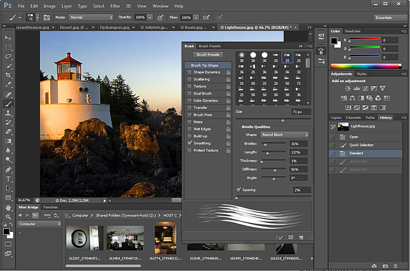
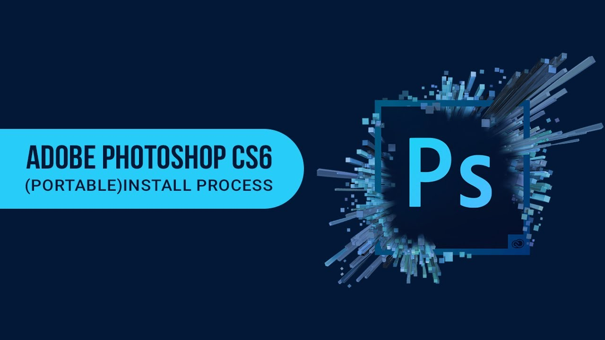

ພ້ອມແລ້ວສູ່ຄວາມແປກໃໝ່
ເລີ່ມຕົ້ນການຮຽນຮູ້ຂອງແຕ່ງຮູບພາບ ແລະ ການອອກແບບກຣາຟິກດີຊາຍທີ່ສວຍງາມທັນສະໄໝ
ຍິນດິຕ້ອນຮັບເຂົ້າສູ່ໜ້າເວັບບົດຮຽນໂຟ້ຊ້ອບ
ເລີ່ມຕົ້ນການຮຽນຮູ້ຂອງແຕ່ງຮູບພາບ ແລະ ການອອກແບບກຣາຟິກດີຊາຍທີ່ສວຍງາມທັນສະໄໝ
ໜ້າຕ່າງພາເນວ ແມ່ນໜ້າຕ່າງຍ່ອຍໆທີ່ໃຊ້ສຳລັບເລືອກລາຍລະອຽດ ຫຼື ຄວບຄຸມການເຮັດວຽກຂອງໂປຣ ແກຣມເຊິ່ງສາມາດຈັດການກັບ Panel ເຫຼົ່ານີ້ດ້ວຍວິທີການຕ່າງເພື່ອໃຫ້ສະດວກກັບການໃຊ້ງງານຫຼາຍຂຶ້ນ.
ວິທີການເອີ້ນໃຊ້ງານ ຫຼື ປິດໜ້າຕ່າງ Paniel ສາມານຳໃຊ້ໄດ້ຫຼາຍວິທີດັ່ງນີ້:
1. ຄິກເມນູ Windows > ເລືອກ Panel ທີ່ຕ້ອງການ
2. ກົດປຸ່ມຄີລັດຂອງພາເນວນັ້ນເຊັ່ນ: ພາເນວ Brush ໃຫ້ກົດປຸ່ມຄີລັດ F5 ເປັນຕົ້ນ
3. ຄິກປຸ່ມໄອຄ໋ອນໃນແຖບພາເນວ
4. ຄິກແຖບທີ່ຊື່ພາເນວທີ່ຊ້ອນກັນຢູ່

ຮູບທີ32: ສະແດງໜ້າຕ່າງ Panel
ໃນກໍລະນີທີ່ຕ້ອງການເພີ່ມພື້ນທີ່ການເຮັດວຽກ ສາມາດປະຕິບັດໄດ້ໂດຍຄິກທີ່ປຸ່ມ ເພື່ອພັບ ເກັບໜ້າຕ່າງພາເນວ ແລະເມື່ອຕ້ອງການໃຊ້ງານພາເນວທີ່ພັບໄວ້ກັບໄປ ກໍ່ຄິກທີ່ປຸ່ມ ເພື່ອເລືອກຂະຫຍາຍໜ້າຕ່າງພາເນວ.

ຮູບທີ33: ສະແດງການພັບໜ້າຕ່າງ Panel
ເມື່ອເປີດພາເນວຂຶ້ນມາໃຊ້ງານເປັນຈໍານວນຫຼາຍ ອາດຈະເຫັນໃຫ້ເບິ່ງບໍ່ເຫັນລາຍການການເຮັດວຽກ ຫຼື ຄຳສັ່ງຕ່າງໆໄດ້ໝົດ ດັ່ງນັ້ນ ອາດຕຕ້ອງປັບຫຍໍ້ຂະຫຍາຍໜ້າຕ່າງພາເນວທັງຄວາມສູງ ແລະ ຄວາມກວ້າງ ໂດຍ ເລື່ອນເມົ້າໄປຊີ້ຕຳແໜ່ງຂອບພາເນວແລ້ວລາກເມົ້າປັບຂະໜາດຕາມຕ້ອງການ.

ຮູບທີ 34 : ສະແດງການຫຍໍ້/ຂະຫຍາຍໜ້າຕ່າງພາເນວ
ພ້ອມແລ້ວທີ່ຈະເຂົ້າການຕັດຕໍ່ຮູບພາບ ແລະ ການອອກແບບຕາມຄວາມຕ້ອງການທີ່ຈະດີຊາຍອອກມາໃນແບບຂອງເຮົາ